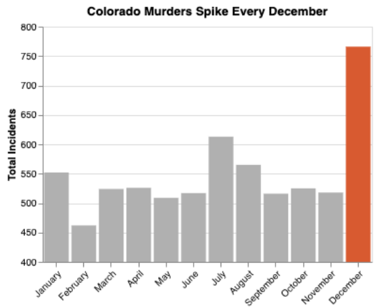

← All projects
Data Visualization · Group project
Same Data, Two Stories
How the exact same Colorado homicide data can tell two opposite stories, depending on the design choices behind the chart.
Overview
Our team started with a national dataset of more than 638,000 U.S. homicide records from 1980 to 2014 and filtered it to Colorado, leaving roughly 6,600 records. From that one dataset we built two honest charts and two deliberately misleading ones.
The truthful charts show that Colorado's unsolved homicide rate has fallen over time and compare solved rates across the ten counties with the most reports. The misleading charts use the same real numbers to falsely suggest that murders spike every December and that women are increasingly being targeted.
My chart

My first sketch isolated a single year where December happened to be unusually high. Once we added a title, it was too easy to notice we'd cherry-picked one year. So I switched to all-time monthly totals and used a truncated y-axis to make December look far more dramatic than it is.
766December incidents
462February incidents
~1.66×real difference
400where the y-axis starts, instead of 0
This deliberately breaks the q-ratio principle of graphical integrity: a bar's height should be proportional to its value. Starting the axis at 400 makes December's bar look several times taller than February's, when the real difference is about 1.66 times. Graying out every other month and coloring December alone pulls the eye straight to the "spike."
User testing
I showed the chart to people before explaining the project. Everyone said December had the highest crime rate "by a landslide," which confirmed the deception worked at first glance. Their best suggestion was to gray out the other months even further so December would stand out more, which I used in the final version.
Once we explained the goal, the testers could quickly pick apart how the chart misled them. That's the point of the project: knowing these techniques makes it easier to spot them, and to avoid them in honest work.